Zeineb Chabchoub, MBA
Fulbright Alumna
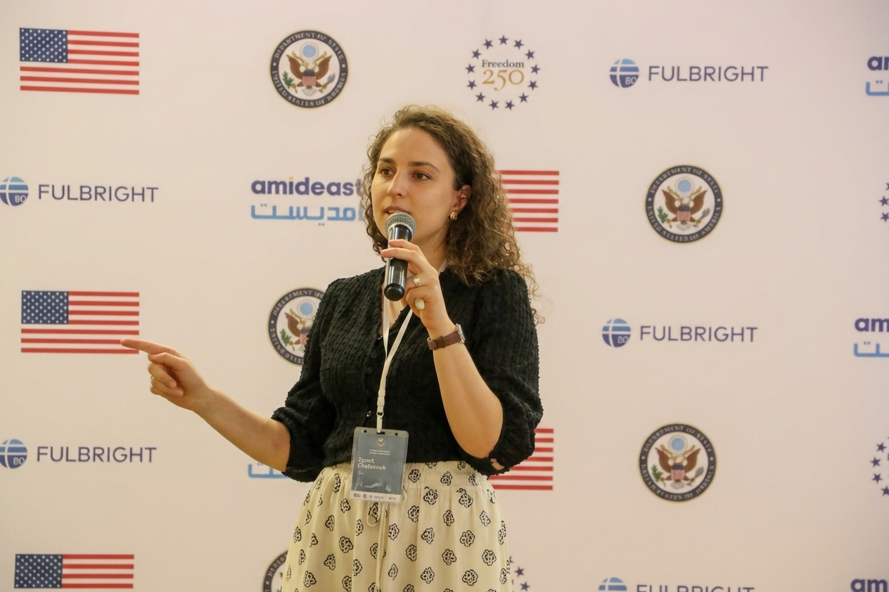
Economic development practitioner with 7+ years' experience in different innovation ecosystems across Tunisia, Europe, and the U.S.
I enjoy working with founders and innovators, backing them or building the programs to support them.
...
Languages: English · Arabic · French
References could be provided upon request — request a reference via meeting .
Awards & Leadership
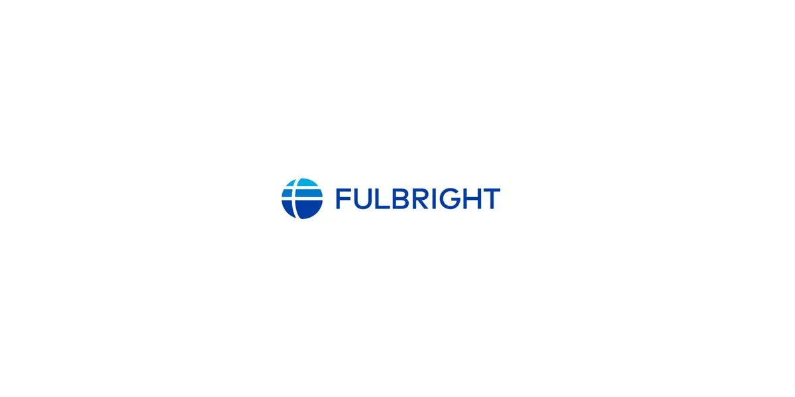
Fulbright Alumna
David Eccles School of Business – Fulltime MBA Program
2024 – 2026
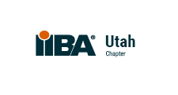
Vice President, Sponsorships
IIBA Utah Chapter
January 2025 – December 2025
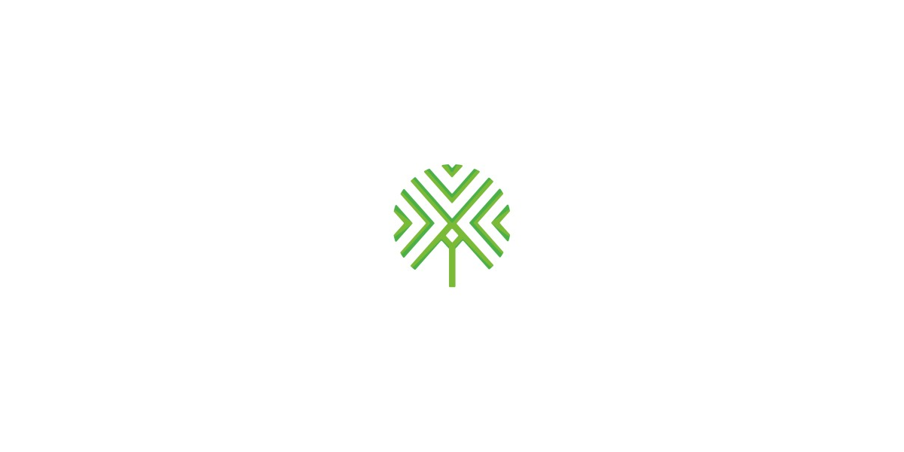
Jurist
European Startup Prize for Mobility
March – October 2023
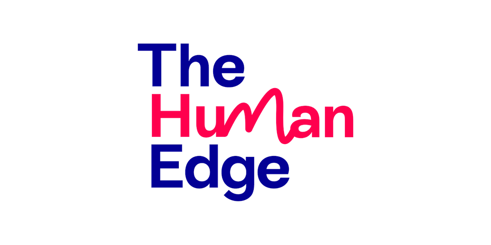
The Most Inspirational Mentor Ambassador Award
The Human Edge
2022
Selected Projects
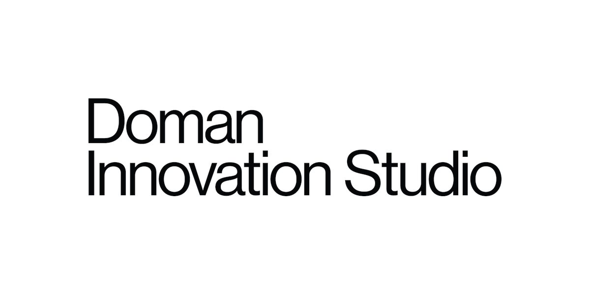
Doman Innovation Studio
My role. Research Associate / Project Lead
Challenge. The University of Utah has a rich base of founder support, programs, labs, mentors, and funding spread across many entities, but no shared, high-level view of what exists, when it applies, and how to reach it. Leadership also needed to understand how well these programs were actually serving founders to inform a donor's strategic plan.
Approach. I led the U Venture Ecosystem Map (2025) project, a navigation tool pairing a visual map with a back-office database, charting 100+ programs across 30+ university entities, informed by 30+ interviews with program leads, faculty, and ecosystem operators. In my second project, which aimed to inform leadership decisions about future projects, I designed the survey, built the database, gathered and cleaned the responses, and created a dashboard that the team still uses. Alongside it, the core of the work was the analysis: turning unstructured data into clear insights, connecting those insights to what leadership was trying to achieve, and laying out specific steps to get there.
Outcomes. Clearer pathways for founders and faster navigation across campus; better alignment across teams around founder outcomes rather than program ownership; and a shared, working understanding of how the support system operates day to day. The analysis fed directly into the donor strategic plan, and the dashboard remains in use.
Read more: U of U Venture Ecosystem Map
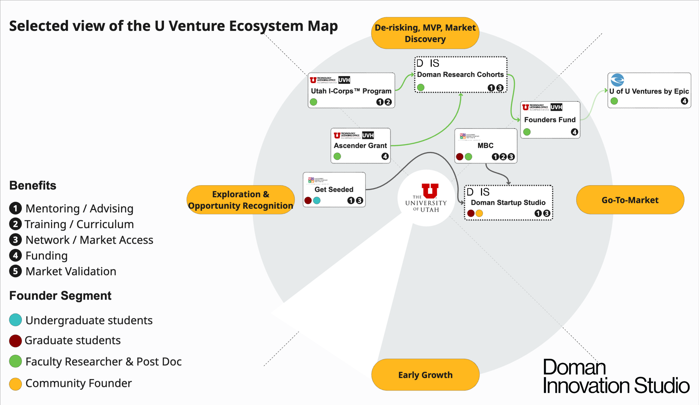
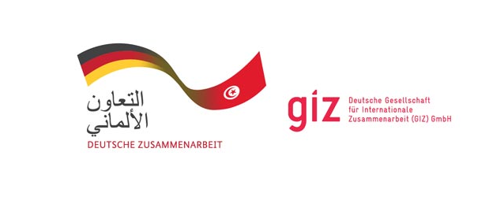

Digital Transformation Center
Startup Ecosystem Partner & Startup Expert
The Digital Transformation Center’s startup and tech ecosystem thesis was simple:
startups are engines of digital economic growth when capital, markets, and expertise move together.
Through the programs I contributed to and led, this work reached
2,000+ innovators and
30+ startup support organizations.
The projects were structured around three core pillars:
- Access to Capital
- Access to Local & International Markets
- Access to Expertise & Knowledge (Capacity Building)
Access to Finance
Flywheel: National Innovation Fund (2021-2024)
Role. Project Manager (GIZ) & Jury Member
Stakeholders. GIZ · World Bank · CDC (Caisse des Dépôts et Consignations)
Challenge. A careful analysis of the Tunisian startup ecosystem pointed to two specific stages where access to finance breaks down and needs institutional support. At the idea stage, there is little friends-and-family capital and almost no patient proof-of-concept funding. Then, after the first dilutive round, founders hit a “valley of death,” where momentum and follow-on capital both depend on hitting KPIs that are hard to reach without further support. We also wanted to back the startup support organizations (SSOs) that carry founders through these transitions, so they could sustain the momentum and fuel the next wave of startups. In practice, the incubators and accelerators meant to do this often lacked the financial capacity to do it consistently.
Approach. I helped build and manage a national blended fund designed to address the full chain through four financing instruments:
- AIR: proof-of-concept grants for startups.
- AIR²: investment-readiness grants for early-stage ventures.
- DEAL: program-launch grants for support organizations (up to 200K TND).
- SAIL: continuity subsidies for high-performing support organizations.
Outcomes. By 2024, AIR and AIR² had supported 105 startups and backed 30 SSOs. The program became a learning blueprint for other GIZ initiatives under the Invest for Jobs umbrella.
Access to Local & International Markets
STRIDE: Regional Expansion Program: Tunisia → Africa (2024)
Role. Partnership Manager
Role: Partnership Manager Challenge. Approach.Challenge. Expanding to Africa from North Africa was never easy. African countries have different economic fabrics and ways of doing business. When founders want to expand from Africa to Africa, they face unfamiliar regulations, fragmented networks, and no clear first step, so proximity rarely translates into real access.
Approach. I helped build a full-funnel expansion pathway that took founders from training through to actual market presence. It narrowed at each stage: 60 founders trained, 15 assessed as expansion-ready, and 5 reaching concrete market entry. The program ran on Westerwelle Foundation hubs in Tunis, Kigali, Mombasa, and Arusha and integrated with Slush’D Tunisia.
Outcomes. 5 market discoveries and an open-source market entry toolkit are available for other founders to use when they want to know how to execute a market expansion.
Open Innovation Initiatives: B2B Startups Sourcing and Matchmaking
Role. Startups Associate
Challenge. B2B startups struggled to break into corporates and SMEs. Procurement was slow, and the entry points into large organizations were unclear, so good products stalled before they reached a buyer.
Solution. I worked on structured open-innovation pathways that covered the full journey: defining the business need with the corporate, sourcing startups that could meet it, running due diligence and matchmaking, managing the relationship through to PoC signature, and scoping the PoC and procurement route.
The process ran through three programs:
- Scan & Match (2022): Public–Private Partnership — GIZ Tunisia & EY
- Link4INN (2023–2024): Grant Agreement — GIZ Tunisia, Tunisian Startups Association, UTICA (Tunisian Union of Industry, Trade and Handicrafts)
- Start’N’Trade (2024): Export-oriented open innovation program with CEPEX (Centre de Promotion des Exportations)
Outcomes. 5+ PoCs delivered with exporters, manufacturers, and corporates.
Media: DEMO DAY « Scan & Match » (EY & GIZ Tunisie)
Partnerships & Delegations (2021-2024)
Role. Partnerships & Delegations co-lead
Challenge. You cannot build an entrepreneurial ecosystem in isolation. The Tunisian startup ecosystem, including the founders, needed more visibility and field discoveries for benchmarks.
Approach. We built a repeatable model for organizing delegations and partnerships around major international conferences. It covered international delegations to Web Summit (Lisbon 2023), VivaTech (Paris 2022), the African Startup Conference (Algiers 2023), and GITEX Africa (Marrakesh 2023); delegation playbooks for target selection, meeting preparation, and structured follow-up; and external representation as a speaker, moderator, and ecosystem liaison across Europe and Africa.
Outcomes. Market discoveries. 50+ startups were sponsored to participate in delegations.
Access to Expertise & Knowledge (Capacity Building)
CoworkUp: Scaling SSO Capacity (2021-2024)
Role. Program Lead
Challenge. Having a strong support system is foundational. Startup ecosystems are no exception. Incubators and accelerators are important actors, but capacity across these organizations is uneven.
Approach. I ran, scaled, and designed 3 iterations of the program. The final iteration of the program was a 12-month capacity-building program that has been scaled up from a 3-month pilot.
Outcomes.The program looped through a monitoring, evaluation, and learning experience, with each iteration adding new components based on the previous one. The last iteration trained 90+ SSO staff and introduced shared tools, processes, and quality standards across organizations.
Go Rise: International Mentoring Program (2021-2022)
Role. Program Manager
Challenge. Getting access to international expertise provides founders with new perspectives and use cases that they don’t necessarily know about. Yet, founders in Tuinisia could not afford that.
Approach. I designed and ran a 5-month mentoring program for 24 tech founders, focused on business models, leadership, and expansion planning.
Outcomes. 24 Founders came away with structured guidance to test their strategy and prepare for growth.

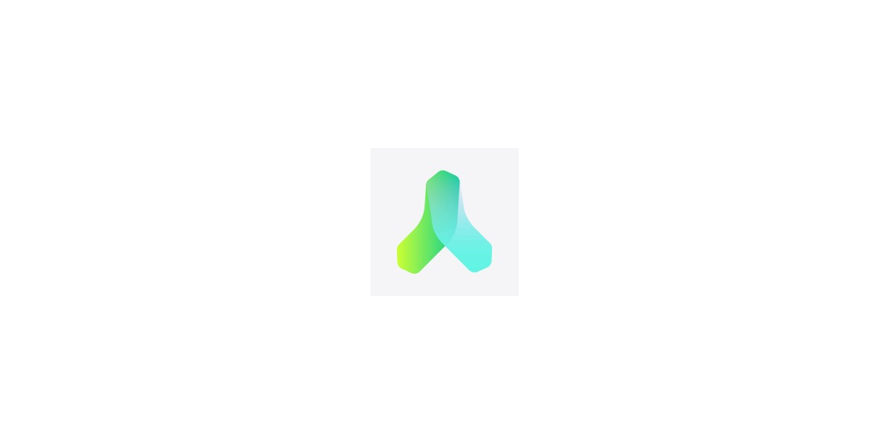
Alien Dimension: AR EdTech Startup
Context. Alien Dimension was an AR EdTech startup building curriculum-aligned augmented reality experiences to improve how science is taught.
My role. Co-Founder & Chief Projects Officer (2018-2021)
Challenge. Bringing AR into real classrooms meant aligning three things at once: pedagogy, technology, and institutional procurement, all while proving learning impact and adoption on a short runway.
Approach. We built 2 products: (1) classroom-ready AR learning modules and piloted them with universities and curriculum bodies. (2) a package including AR cards and a mobile app for 2 courses: human anatomy and astronomy.
Outcomes. We built AR astronomy and human anatomy courses, partnered with Honoris United Universities and Université Centrale de Tunis to launch an AR-enabled birth lab, raised €150K in pre-seed funding, and built and led a 6-person product and marketing team. The pilots validated real institutional demand for AR learning tools.
Lessons learned. In my startup experience, I made all the mistakes you should avoid. Read more in my detailed lessons learned newsletter. Read more →
Website · LinkedIn · Newsletter

Speaking & Media
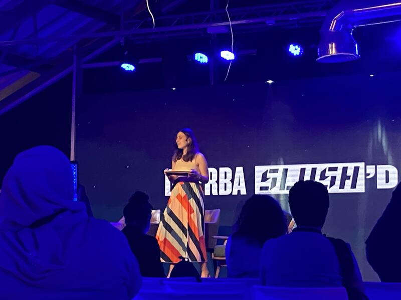
Slush’D (Djerba, 2024)
- Roundtable: The Future of Funding in Africa
- Panel: Building Bridges — VC insights on Africa’s growth
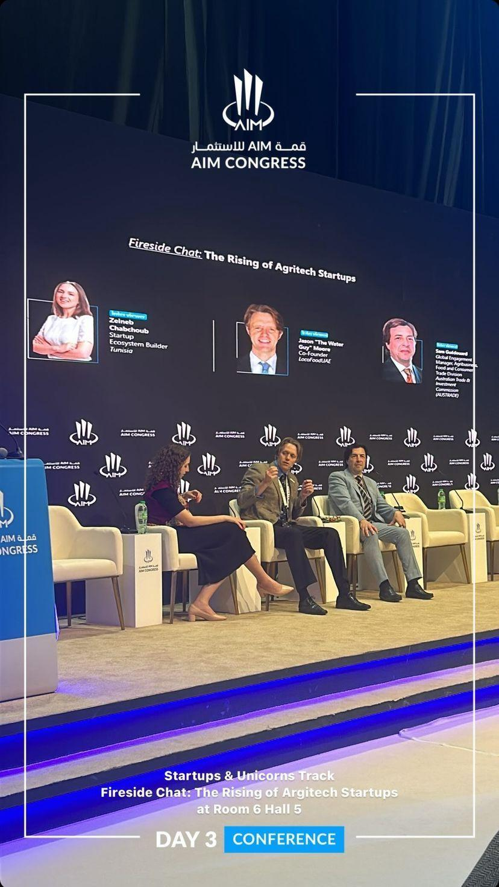
AIM Congress (Abu Dhabi, 2024)
- The rising of Agritech Startups

GITEX Africa (2023)
- The Future of Investment in Africa
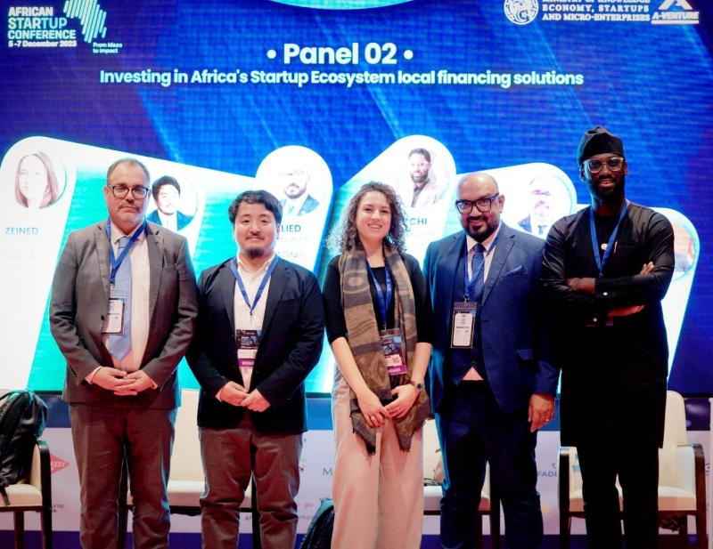
African Startup Conference (Algeria, 2023)
- Investing in Africa’s Startups: Local financing solutions
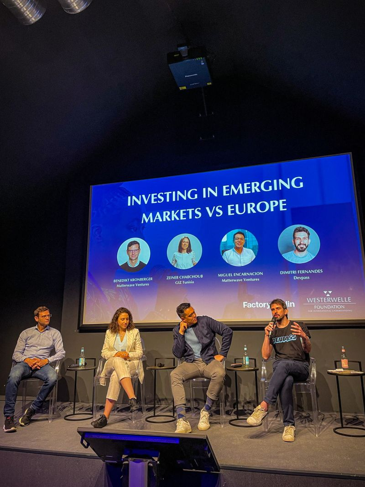
Young Founders Program (Berlin, 2023)
- Investing in Emerging Markets vs Europe
Articles
For Founders
Fundraising, decision-making, and navigating growth from the inside.
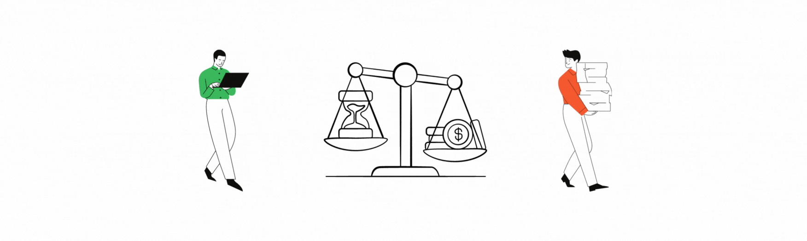
When is the best time to raise money?
Read →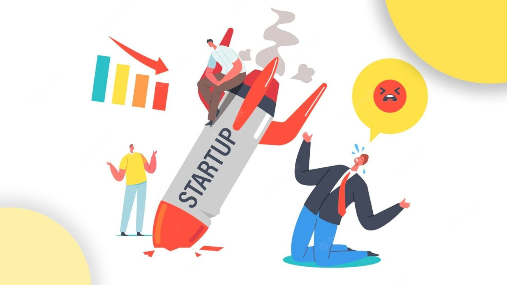
Could Cash Wait Until the Product Is "Perfect"?
Read →Market Reality Check: "Cool" Product Isn't Enough!
Read →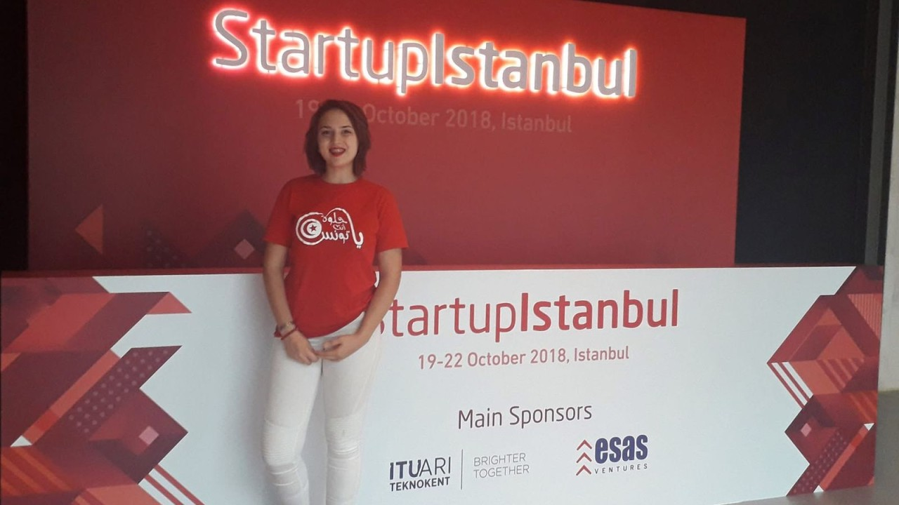
The Most Dangerous Threats to Your Startup Are Sitting Across the Table
Read →#16 Tips for maximizing Startup Success at International Events
Read →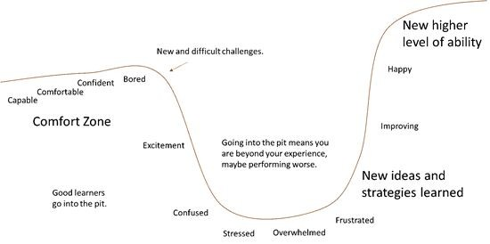
Have you ever fell into a pit of success?
Read →For Investors & Operators
Patterns across markets, capital, and ecosystem Outcomes.
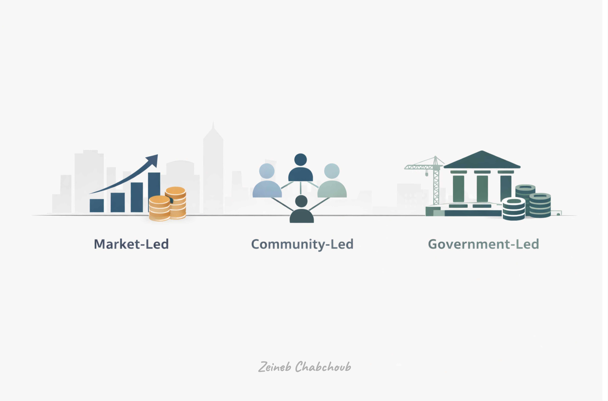
Market, Community, or Government: Who Shapes the Ecosystem?
Read →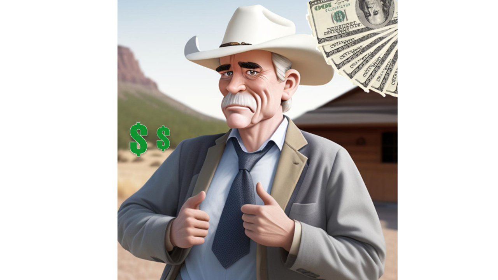
Why Do I Believe in Venture Capital 2.0?
Read →Which Entrepreneurial Strategy Will You Choose?
Read →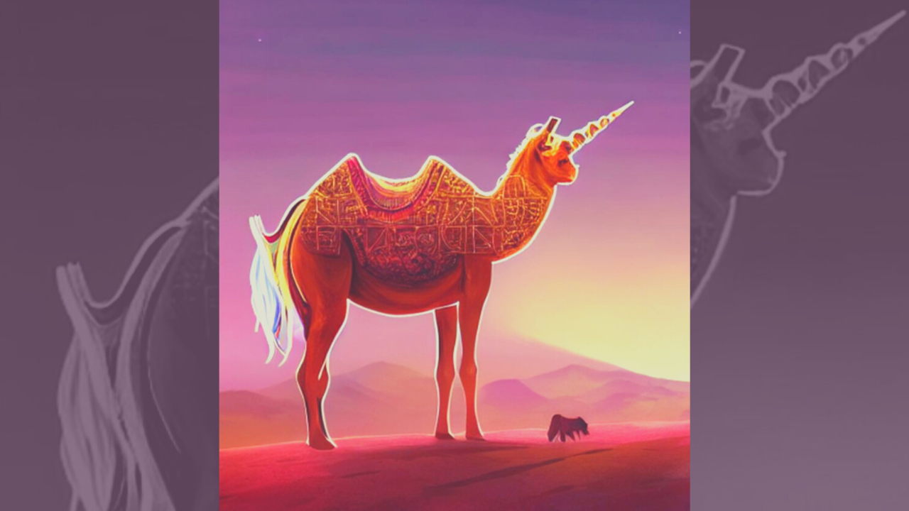
North African Startups: From the Desert to the Boardroom
Read →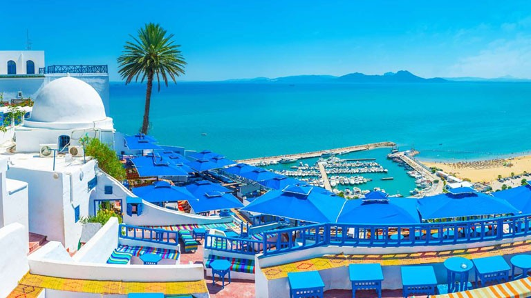